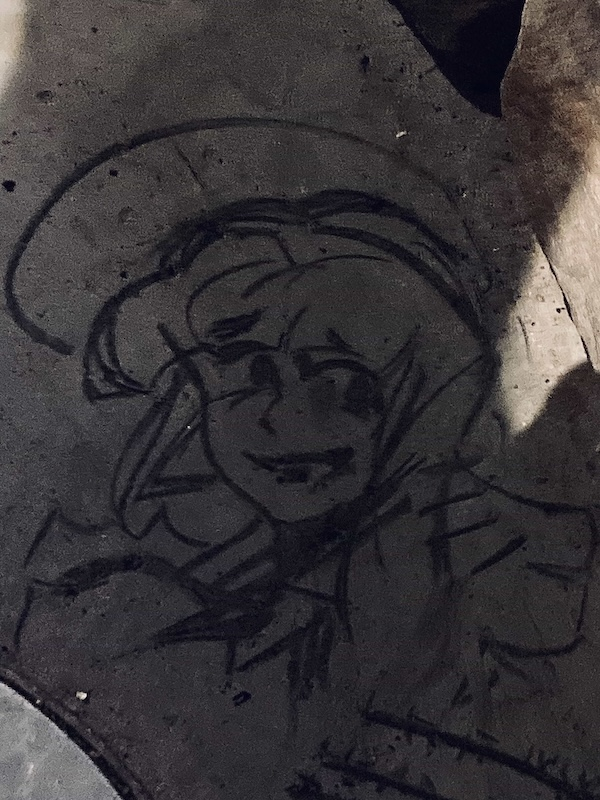
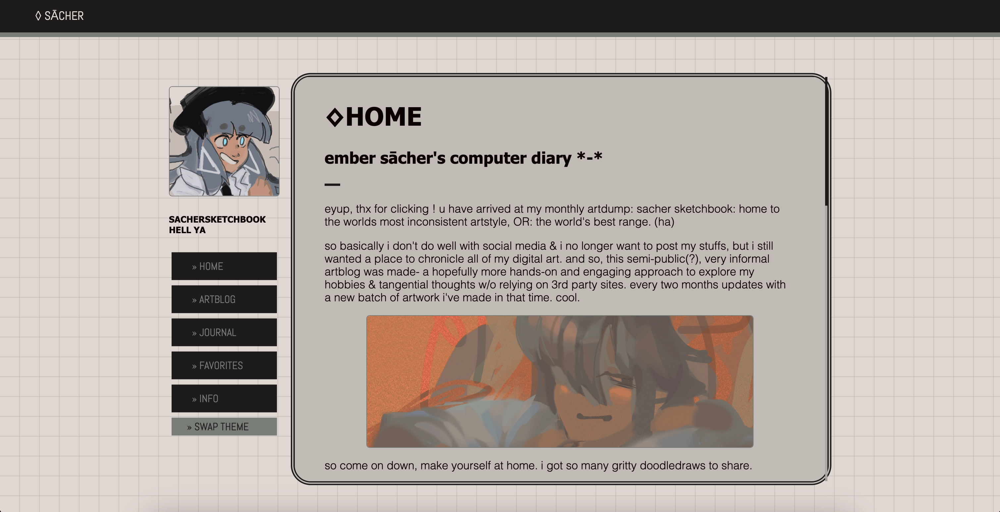

◊JOURNAL
a spur-of-the-moment thoughts dump / microblog-adjacent
5-24-24 | shower thoughts abt creative writing and being percieved
yknow, publicizing any form of writing, fiction or not, requires a certain amount of trust with or at least some kind of awareness of the audience right. once you make a writing public, it's no longer YOURS - it's the people's. you can intend a certain messege however you want, but what the audience interprets of that message is how YOUR writing will be percieved - not what YOU interpret of it. and that's a hurtle that i have not been able to get over for a majority of my creative journey.
...which is kinda paradoxical to say, because i love visual artwork and i love sharing it, so i should be able to share my writing too right? but there is just something different in my mind between the medium of visual art, and the medium of prose, and that difference is strong enough to me that i'm completely turned off by the idea of sharing any of my creative writing to the public & having it be percieved. i can't explain it, but i don't think i could ever showcase my stories/universes in a way that feels true. it used to tear me up inside, not being able to get tf over myself (lol) and just post something. but nowadays i've found contentment with fact that the deeper aspects of my work are only available to like the TINIEST select friend group. cuz why do i even NEED to share ALL of my words, you know??!?!? if something's really important to me, why should i ever post it online.
5-22-24 | updated the site look a lil
i updated the site's stye while i was at it. nothing was wrong with the old one, i just felt it needed a change. honestly i still like the old one a ton, might change it back if i feel like it 😭
{kind=link}
2-26-24 | thinking abt repainting 'light[...]'
i want to redo/repaint over this artwork eventually.
i took a peek at some WIP versions of this i had stowed away, and honestly. i think the final piece is over-rendered. in my illusts, i feel like there's more charm when i leave some parts messy, and tbh i think some messiness would help to add more distinction between the two figures here too. bc i do feel like they blend in too much here.
like, tell me this wip version doesnt have more charm in a way.
{kind=link}
2-15-24 | dead times
decided to revist an old OC playlist i hadn't listened to in a hot minute and 'spare hearts' from catghost ost switched on and i nearly jumped out of my seat
i suddenly remembered how much this story used to influence my own OCs and how i can't stand it now because of an unrelated event that happened around that time. i can say that for so many other medias too, it's unreal that up until now, i've never quite comprehended just how pieces of media that i haven't watched or thought of in years that still show their faces in the things i make to this day. how PTC's power/weapon system still has vague correlations to a glitchtale AU [ew] i made when i was 14, how 'law of talos' was the direct inspiration for callisto and marcene but i can't even stand to watch either of them anymore, among others because of [unrelated].
reminded bitterly that many of my stories are created on the backs of inspos that were accumulated over multiple years from all corners of my life and no matter what, i will never not be able see myself through my works, no matter how mundane they are or how much i do not want to be reminded of certain aspects from dead times.
it feels very silly to say all of this about pieces of writing that i'll probably never publicize at all, but regardless of that, death of the author feels reaaally far away from me.2-3-24 | lobotomycore
a giomi i drew on the floor with a piece of burnt wood immediatly after recieving a minor head injury
1-9-24 | new layout, how we feeling?
I DONT KNOW!! i dont know how i feel abt this one tbh. my main intent going into this was to tidy up file paths, but to more importantly, clean up the mobile version of the site. something that REALLLY bugged me abt the old layout was the fact that, since all of the main content was inside of a scrollable div instead of the ‹main› tag, the search bar in mobile browsers wouldn't HIDE when you scrolled down the page. and considering x & y overflow were hidden too, this caused a lotta visual disparity for the main content block depending on the phone screen's size. this new layout was my attempt to fix that.
i'll have to journal out how it looks on more devices to be 100% sure, but im v sure this issue has been solved now. a part of me really misses the smaller, more compact look though. it's not all that different actually, but the old one was specifically more... rounder imo. i'll probably tweak the layout some more later down the line to get that vibe back, but we'll see.
old version for comparison:
{kind=link}
new vers is also inspired by debtdeath's site too, pls give them some love :,D
11-3-23 | IMAGE. COMPRESSION.
that's it, that's the journal entry. hatred. seething for neccessary evil...........
10-12-23 | author favorites
i was rereading some older OC profiles, and i realized that... the more i like a character of mine, the more pathetically i describe them 😭 ...and it's not in the endearing "aww poor thing </3" kinda pathetic, i mean, descriptions that are so deprecating they legitimatly give you second-hand emberassment.
i think i do this out of a subconscious fear of not giving my faves enough flaws. like. fear of them being percieved as a mary sue or "creator's pet" .....but in my desire to hold back my favoritism, i just end up writing them so unfavorably instead
hmm, its so tough when u have a fave. no matter how hard u try, u can't portray them how u do in ur head. its either pretentious writing or severe nerfing in my experience. when i read older writings of mine, the aspects i deemed as my least favorites ended up being the most well-written in the end, because i didn't take them too seriously.
its so hard not to take a character seriously tho when u already care so much. how tf do ppl do it.... how to disconnect, my whole heart is in this bitch !!!